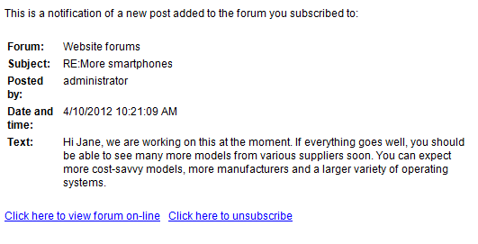

Managing forum subscriptions
Forum subscriptions allow users to receive email notifications when a new post is added to a selected forum or as a reply to a specific post. Users can subscribe directly while browsing through forums on the live site.
Forum subscriptions are enabled by default. You can limit which users can subscribe to a certain forum while editing this forum on the Security tab.
You can disable subscriptions in the properties of the web part that displays forums.
Enabling double opt-in
To make users confirm that the email address they are subscribing with really exists and belongs to them, you can enable the double opt‑in functionality. With double opt‑in enabled, subscribers receive an email with a confirmation link. They have to click this link to create their subscription.
To enable double opt‑in globally for all forums:
Go to Settings -> Community -> Forums.
Check the Enable double opt-in for forums setting.
Specify how long you want the confirmation links to be valid in the Double opt-in interval (hours) setting.
The following two steps are optional. If you skip them, the system will use the default approval page located in ~/CMSModules/Forums/CMSPages/SubscriptionApproval.aspx.
Place the Forum subscription confirmation web part on a new page. Adjust its properties according to your needs.
Enter the page path into the Double opt-in approval page path setting.
Double opt-in is now configured for all forums. You can override the settings for each forum group in its properties in the Forums application. You can also define specific settings for selected forums.
The functionality uses the Forums - Subscription request email template. You can insert the confirmation link into the template using the {%SubscriptionLink%} macro.
Unsubscription
Users can cancel their forum subscriptions at any time by clicking the unsubscription link included in each notification email about a new post (when using the default email template).

New forum post notification e-mail
The link leads to a page that automatically processes the unsubscription request and deletes the appropriate subscription. The subscription is identified through a parameter passed in the query string of the link's URL.
This is handled either by the ~/CMSPages/Unsubscribe.aspx system page, or by a custom unsubscription page created for the website. If you wish to use a custom page, it is necessary to place the Forum unsubscription web part onto the page. You then need to enter the URL of this page into the Forum unsubscription URL field of the given forum or forum group. (The value can also be inherited from the website's Forum unsubscription URL setting, specified in Settings -> Community-> Forums.)
Subscription e-mails and the Forum base URL
It is important to set a correct Forum base URL value in the forum configuration so that the subscription notifications and other related emails contain valid links leading to the appropriate forum.
When entering the value, you can use the relative URL of the page where the forum is located, for example: ~/Community/Forums.aspx
Alternatively, users with access to the administration interface can view all their active forum subscriptions on the Subscriptions tab in the My profile application, and manually Unsubscribe as needed.
For live site users, the same options can be provided by the My account web part, as long as its Display my subscriptions and Display forum subscriptions properties are enabled.
Managing subscriptions
When editing a forum in the Forums application, administrators can manage all of the given forum's subscriptions on the Subscriptions tab.
Email templates
Post notification emails are sent to subscribed users based on the Forums - New post email template. Notifications informing users about their forum subscriptions or unsubscriptions are based on the Forums - Subscription confirmation and Forums - Unsubscription confirmation templates. If you have double opt-in enabled for forums, the email that is sent upon requesting subscription is based on the Forums - Subscription request template.
You can edit the templates in the Email templates application.
You can use the following context macros in forum subscription email templates:
{% ForumDisplayName %} - display name of the related forum.
{% ForumName %} - code name of the related forum.
{% ForumDescription %} - resolves into the description text of the forum.
{% GroupDisplayName %} - display name of the related forum group.
{% GroupName %} - code name of the related forum group.
{% GroupDescription %} - description text of the forum group.
{% PostSubject %} - the subject of the new forum post that caused the notification to be sent.
{% PostText %} - resolves into HTML content of the new post.
{% PostTextPlain %} - resolves into a plain text version of the new post's content.
{% PostUsername %} - the name of the user who created the post.
{% PostTime %} - the date and time when the new post was added.
{% Link %} - resolves into a link to the new post.
{% UnsubscribeLink %} - generates a link that can be used to unsubscribe from the given forum.
The following macros are available for (un)subscription notifications:
{% Subject %} - if the user is subscribed to a specific post, this resolves into the subject of the given post. Otherwise, it returns an empty string.
{% Separator %} - if the user is subscribed to a specific post, this returns the value of the forums.confirmationtemplateseparator resource string (" - " by default). Can be placed between the name of the forum and the subject of the post to cover both possible subscription scenarios.
The following macro is available when double opt-in is enabled:
{% SubscribeLink %} - contains the URL of a page used to confirm subscriptions.
You can also access the following related objects and their properties (for example {% ForumPost.PostViews %} ):
{% ForumPost %} - ForumPostInfo object of the post to which the user is subscribed (if applicable).
{% Forum %} - ForumInfo object representing the forum to which the user is subscribed.
{% ForumGroup %} - ForumGroupInfo object of the forum group containing the given forum.
{% Subscriber %} - ForumSubscriptionInfo object representing subscription of the recipient to the given forum. Only available for the New post template.